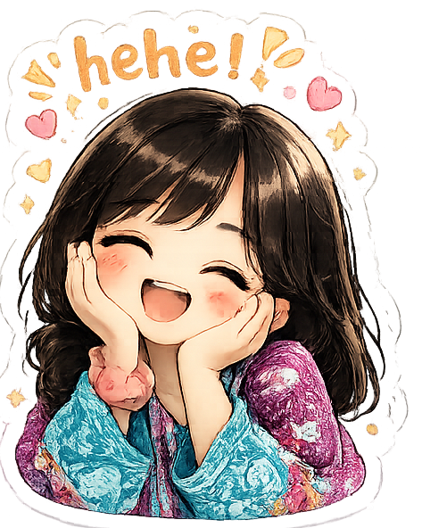

🌸 soft ending
thank you for visiting this little world made just for you.
some little thoughts,
tiny memories,
soft duas,
and peaceful feelings —
all kept here quietly, just for you.
"dua hai tum hamesha peaceful raho,
smile karti raho,
aur life tumhare liye
thodi gentle ho jaye."
take care, Rabiya 🌙


have a good day 🌸
✦
♡
◦